trials = 10
success = 82 The Bayesian Logic
Note
In this chapter, we will discuss
How the posterior estimate is calculated, and how it differs from p-values and the MLE
How to summarize / interpret a Bayesian posterior
How to choose a prior
So, you are here to learn about Bayesian statistics? So, what’s the deal with that?
In a nutshell, Bayesian statistics is just another philosophy to evaluate a statistical model against data, similar to the methods of calculating p-values and the MLE, which you are likely familiar with. So, when you have a linear regression model, you can either evaluate it against data using MLE and p-values, or you can choose to calculate the so-called Bayesian posterior (we will explain what this means shortly).
Note
A corollary of what we just discussed is that there are no special Bayesian models - Bayesian statistics is just a different approach to evaluate a given statistical model.
So, what is the difference between MLE and p-values (we call those “frequentist methods”) and the Bayesian posterior? What are the advantages and disadvantages, and when to choose what? Very briefly, the two main points are that:
- Bayesian inference is computationally more stable for complex models and in the small data limit, which is why it is preferred for complex, hierarchical models and anything that is non-standard
- The indicators calculated by Bayesian inference carry a different information than what is contained in p-values and the MLE, and many researchers have argued that this information is more intuitive and helpful than what is provided by the frequentist indicators.
Do not worry if this sounds very abstract at the moment - these points will become clear once you progress through this book. We will start in this chapter by understand what the results are when we apply Bayesian inference to a statistical model, and how this is contrasted to the classical frequentist methods of inference.
2.1 Frequentist and Bayesian analysis of a coin flip experiment
To illustrate the difference between a frequentist and a Bayesian approach to evaluating a statistical model, assume I’m trying to understand if I can predict the future.
My experiment to examine this question is that I flip a coin, with a previous guess if it comes up heads or tails. I have had 10 trials, and 8x success in guessing the side.
What we want to know now is what my properties are regarding correctly guessing the outcome of the coin flip experiment, with the three inferential methods in statistics: MLE, NHST and Bayes.
2.1.1 The statistical model
All three methods require that we have a statistical model that allows us to express the probability of our possible observations as a function of the model’s parameters. In the case of a coin flip, such a model is the binomial model, which has one parameter, p, the probability of a success.
In r, getting the probability of an observation from this model is provided by the function dbinom()
Note
In R, functions related to probability distributions have a unified naming scheme that consists of the name of the distribution (in our case binomial or binom), preceded by the letters r,q,p or d, with the following meaning:
- rbinom (r = random) samples from a binomial distribution
- qbinom (q = quantile) gives the quantile function of the distribution
- pbinom (p = probability) gives the cumulative probability function
- dbinom (d = density) gives the probability (density) of a particular observation
For example, dbinom(6,10,0.9) gives you the probability of obtaining 6/10 successes when the true probability of heads is 0.9. Try this out yourself, with different values of the successes and the expected probabilities
dbinom(6,10, 0.5)[1] 0.20507812.1.2 The ML estimator
The idea of maximum likelihood estimation (MLE) is to look for the set of parameters that would, under the given model assumption, lead to the highest probability to obtain the observed data. In his seminal work from 1922, Fisher proved that MLE is, in some sense, the optimal method for inferring population parameters from a sample, as it contains all available information about the parameter (Sufficiency) and converges to the truth with smaller error than any other estimator (Efficiency/Consistency).
In our case we have only one parameter, the probability of success per flip. Let’s plot this for different values and look for the maximum.
parametervalues <- seq(0,1,0.001) # parameters to check
likelihood <- dbinom(success,trials,parametervalues) # p(D|parameters)
# plot results
plot(parametervalues, likelihood, type = "l")
legend("topleft", legend = c("Likelihood", "maximum"), col = c("black", "red"), lwd = 1)
MLEEstimate <- parametervalues[which.max(likelihood)]
abline(v=MLEEstimate, col = "red")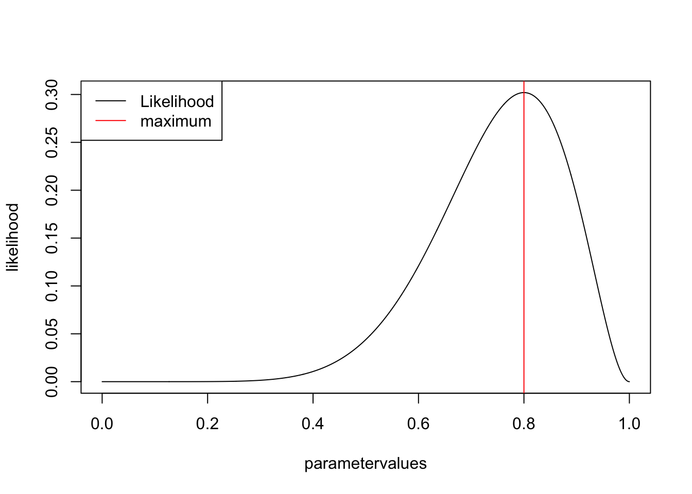
2.1.2.1 Constructing confidence intervals
OK, the MLE is the best value, but what is often more interesting is the uncertainty around this value. Frequentist CIs are constructed according to the following idea:
if I were to repeat the experiment many times, how would the MLE estimates of each experiment scatter around the true value?
And based on this, how wide would an interval around the MLE have to be so that the true value is contained in the interval x% (typically 95%) of all these repeated experiments?
The exact statistical machinery to do this is done in most elementary statistics books. The result for a 1-parameter model is that the boundaries for the CI have to be set approximately at a log likelihood difference of 1.92
plot(parametervalues, likelihood, type = "l")
legend("topleft", legend = c("Likelihood", "maximum", "CI"), col = c("black", "red", "green"), lwd = 1)
MLEEstimate <- parametervalues[which.max(likelihood)]
abline(v=MLEEstimate, col = "red")
confidence.level <- log(max(likelihood)) -1.92
leftCI <- parametervalues[which.min(abs(log(likelihood[1:which.max(likelihood)]) - confidence.level))]
abline(v=leftCI, col = "green")
rightCI <- parametervalues[which.min(abs(log(likelihood[which.max(likelihood):length(likelihood)]) - confidence.level)) + which.max(likelihood) -1]
abline(v=rightCI, col = "green")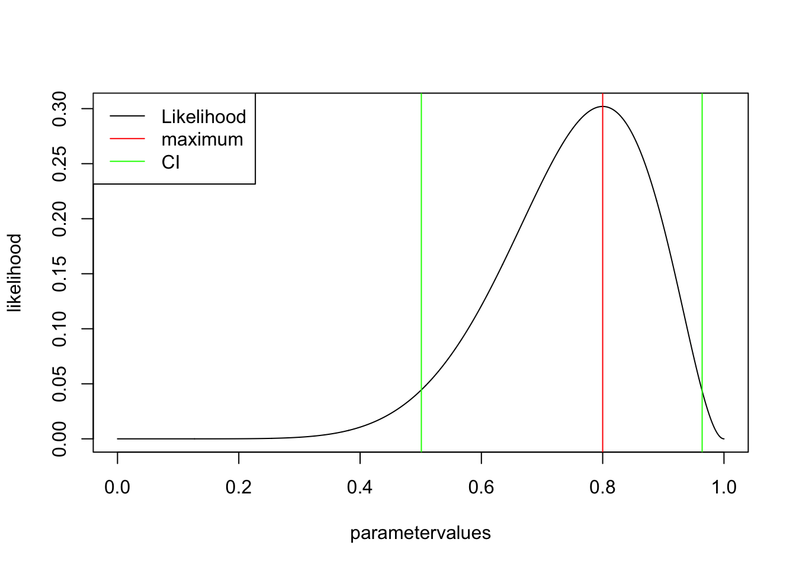
Note: there are also other methods to look at uncertainty with likelihoods, e.g. the profile likelihood, see discussion here.
NoteSummary MLE
- Best estimate is given by maximizing the likelihood (MLE)
- 95% CI –> if we would do the experiment over and over again, 95% of the CIs would contain the true value. NOTE: this is != saying: for a given dataset, the true value is in the CI with 95% probability!
2.1.3 Getting the p-value for a fair coin
The next method on our list is the p-value. The p-value is not an estimator for a parameter of a model, but rather a statement if the data is compatible with a certain model (with fixed parameters) that is called the null hypothesis.
Want to get p-value for a smaller or equal result (1-tailed) given a fair coin p(k<=kobs|H0:p=0.5). Basically, we want the sum over the red bars
barplot(dbinom(0:10, 10, 0.5), col = c(rep("grey", success ), rep("red", 11-success)))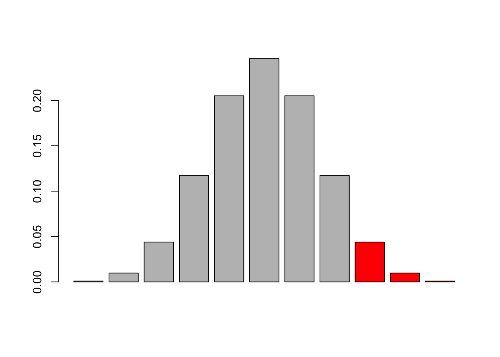
line(pbinom(0:10,trials,prob = 0.5, lower.tail = F))
Call:
line(pbinom(0:10, trials, prob = 0.5, lower.tail = F))
Coefficients:
[1] 1.2640 -0.1373We can get this with the cumulative distribution function in R
pValue <- pbinom(success,trials,prob = 0.5, lower.tail = F)but it is a bit tricky, because depending on which side one wants to test, you have to add a -1 to the successes because of the discrete nature of the data and the definition of the cumulative in R. You can try, but it’s safer in practice to use the binom.test, which calculates the same values
binom.test(7,trials,0.5) # two sided
Exact binomial test
data: 7 and trials
number of successes = 7, number of trials = 10, p-value = 0.3438
alternative hypothesis: true probability of success is not equal to 0.5
95 percent confidence interval:
0.3475471 0.9332605
sample estimates:
probability of success
0.7 Alternatively:
binom.test(7,trials,0.5, alternative="greater") # testing for greater
binom.test(7,trials,0.5, alternative="less") # testing for less
TipSide-note: multiple testing
Imagine there is no effect, but we keep on repeating the test 100 times. How often do you think will we find a significant effect?
data= rbinom(100,10,0.5)
pValue <- pbinom(data,trials,prob = 0.5, lower.tail = F)
sum(pValue < 0.05)[1] 7Yes, 5 is what you expect. To be exact, in the case of discrete random distributions, the value doesn’t have to be exactly 5%, but that is a side topic, and here it works.
The message here is: if you do repeated tests, and you want to maintain a fixed overall type I error rate, you need to adjust the p-values, e.g. by
pValueAdjusted <- p.adjust(pValue, method = "hochberg")
sum(pValueAdjusted < 0.05)[1] 0Remember: in general, if you choose an alpha level of 5%, and you have absolutely random data, you should get 5% false positives (type I error) asymptotically, and the distribution of p-values in repeated experiments will be flat.
NoteSummary NHST
- p-value –> probability to see the observed or more extreme data given the null hypothesis
- rejection H0 if p < alpha. If p > alpha, the test is inconclusive
- if you do multiple tests, you may want to adjust the p-values
Also note: we are free to choose the null-hypothesis as we want. What would you do if your null hypothesis is that a coin should have a 0.8 probability of head?
2.1.4 The Bayesian estimate
Remember for Bayes p(M|D) = p(D|M) * p(M) / P(D), and we can show that p(D) is just the integral over p(D|M) * p(M)
We had already calculated p(D|M), so we just need to define p(M), the prior. For the moment, we will use a flat prior, but see the comments on prior choice later in the book - for a bernoulli trial often other priors, in particular the beta distribution, are used.
prior <- rep(1,1001)
posterior <- likelihood * prior / sum(likelihood * prior) * length(parametervalues)
plot(parametervalues, posterior, col = "darkgreen", type = "l")
lines(parametervalues, likelihood)
lines(parametervalues, prior, col = "red" )
legend("topright", c("likelihood", "prior", "posterior"), col = c("black", "red", "green"), lwd = 1 )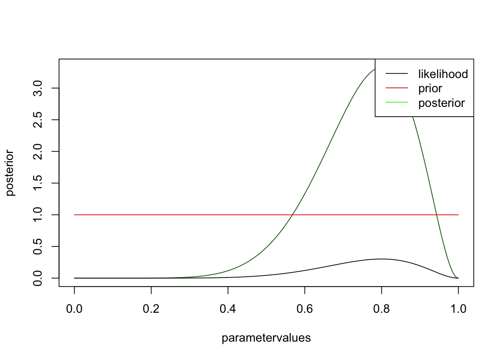
you see that likelihood and posterior have the same shape. However, this is only because I chose a flat prior. There is still a difference, however, namely that the posterior is normalized, i.e. will integrate to one. It has to be, because we want to interpret it as a pdf, while the likelihood is not a pdf. Let’s look at the same example for an informative prior
prior <- dnorm(parametervalues, mean = 0.5, sd = 0.1)
posterior <- likelihood * prior / sum(likelihood * prior) * length(parametervalues)
plot(parametervalues, posterior, col = "darkgreen", type = "l")
lines(parametervalues, likelihood)
lines(parametervalues, prior, col = "red" )
legend("topright", c("likelihood", "prior", "posterior"), col = c("black", "red", "green"), lwd = 1 )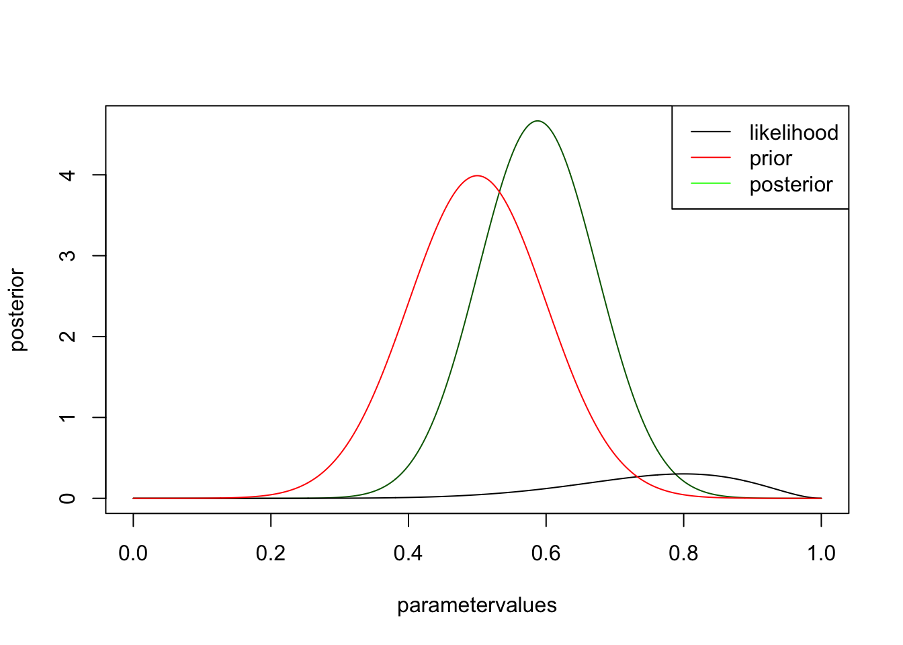
you can see that the likelihood moves the posterior away from the prior, but not by much. Try the same thing with more data, but the same ratio, i.e. change to 30 trials, 9 success
NoteSummary Bayes
Distribution in, distribution out: prior * likelihood = posterior
2.1.5 Exercise
2.2 Interpreting the Posterior
In standard statistics, we are used to search for the point that maximizes p(D|phi), and interpret this as the most likely value.
parameter = seq(-5,5,len=500)
likelihood = dnorm(parameter) + dnorm(parameter, mean = 2.5, sd=0.5)
plot(parameter,likelihood, type = "l")
MLEEstimate <- parameter[which.max(likelihood)]
abline(v=MLEEstimate, col = "red")
text(2.5,0.8, "MLE", col = "red")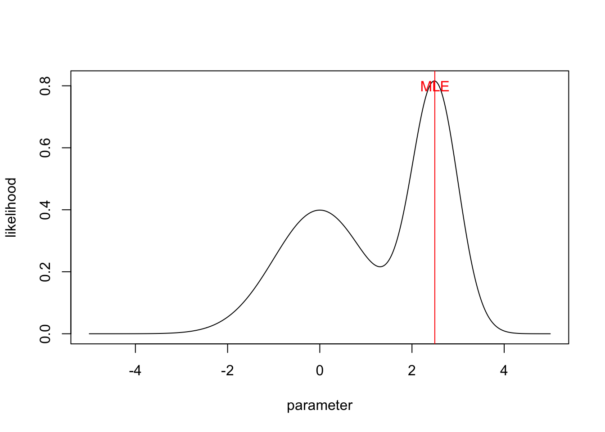
Assume the prior is flat, then we get the posterior simply by normalization
unnormalizedPosterior = likelihood * 1
posterior = unnormalizedPosterior / sum(unnormalizedPosterior/50) In Bayesian statistics, the primary outcome of the inference is the whole distribution.
plot(parameter,posterior, type = "l")
polygon(parameter, posterior, border=NA, col="darksalmon")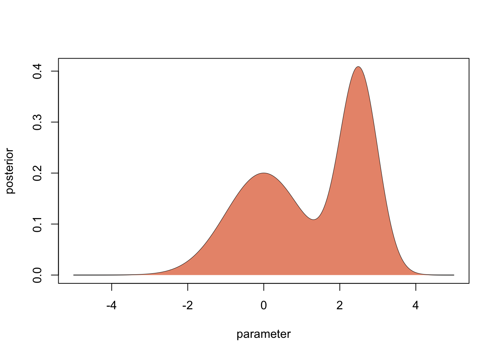
Any time you want to calculate some outcome of the inference (predictions, uncertainties), this distribution should be used.
2.2.1 Bayesian point estimates - MAP as well as posterior median or mean
Most Bayesians will insist that the posterior distribution is the best possibly summary of the Bayesian inference, and that you should consider it as a whole when you want to draw conclusions from your data. However, in many cases, researchers still want to summarize the distribution by certain values, e.g. for a table in a paper.
For such a table, the first typical ingredient would be a point estimate of the parameter of interest, i.e. a value that summarizes the best estimate for the parameter. Frequentists would supply the MLE in this case. Bayesians have several options.
If you want to have the most probable parameter value for the parameter, what you can do is to use the mode of the posterior distribution. It is called the maximum a posteriori probability (MAP) estimate.
plot(parameter,posterior, type = "l")
polygon(parameter, posterior, border=NA, col="darksalmon")
MAP <- parameter[which.max(posterior)]
abline(v=MAP, col = "red")
text(2.5,0.4, "MAP", col = "red")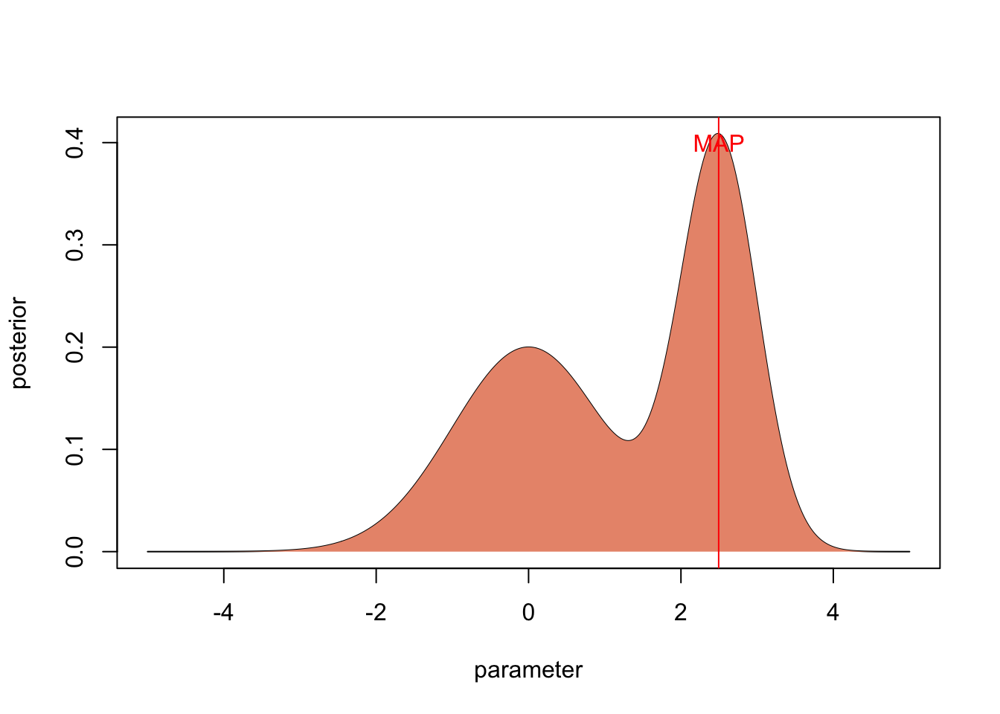
Although the MAP is very intuitive as the “best value” for your estimate, it has several problems, which is the reason why it is rarely used in practice to provide a Bayesian point estimate.
The first reason is computational: with the MCMC methods that are used in practice to estimate posterior distributions (see next section), it is very hard to locate the exact position of the MAP in posterior space.
The second reason is that Bayesian methods are often used for complicated models and in non-asymptotic cases. In such a situation, the likelihood or posterior often has weird, non-normal shapes. If the posterior distribution is very skewed as in our example, it may well be that the MAP doesn’t really give a good idea of where most probability mass is.
plot(parameter,posterior, type = "l")
polygon(parameter, posterior, border=NA, col="darksalmon")
medianPosterior <- parameter[min(which(cumsum(posterior) > 0.5 * 50))]
abline(v=medianPosterior, col = "blue")
text(2.9,0.3, "Median", col = "blue")
mean <- mean(posterior * parameter) / mean(posterior)
abline(v=mean, col = "darkgreen")
text(0.4,0.25, "Mean", col = "darkgreen")
2.2.2 Bayesian uncertainties
The second typical ingredient to summarize a distribution is the width or spread, signifying the uncertainty of the parameter estimate. Also here, there are several options.
2.2.2.1 Bayesian Credible intervals (CIs)
The basic option to do this is the Bayesian credible interval, which is the analogue to the frequentist confidence interval. The 95 % Bayesian Credibility interval is the central 95% of the posterior distribution
plot(parameter,posterior, type = "l")
lowerCI <- min(which(cumsum(posterior) > 0.025 * 50))
upperCI <- min(which(cumsum(posterior) > 0.975 * 50))
par = parameter[c(lowerCI, lowerCI:upperCI, upperCI)]
post = c(0, posterior[lowerCI:upperCI], 0)
polygon(par, post, border=NA, col="darksalmon")
text(0.75,0.07, "95 % Credible\n Interval")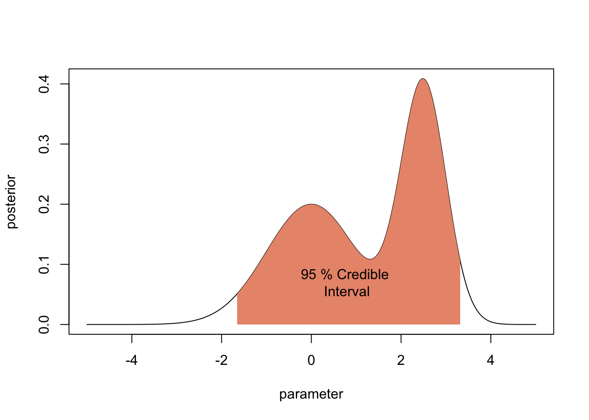
In practice, to circumvent issues with estimating tail probabilities from MCMC samples, Bayesians often provide 80% or 90% instead of 95% credible intervals.
2.2.2.2 HPD and LPL
There are two alternatives to the credibility interval that is particularly useful if the posterior has weird correlation structures.
- The Highest Posterior Density (HPD). The HPD is the x% highest posterior density interval is the shortest interval in parameter space that contains x% of the posterior probability. It would be a bit cumbersome to calculate this in this example, but if you have an MCMC sample, you get the HPD with the package coda via
HPDinterval(obj, prob = 0.95, ...)- The Lowest Posterior Loss (LPL) interval, which considers also the prior.
More on both alternatives here.
More options to plot HPD in 2-d here http://www.sumsar.net/blog/2014/11/how-to-summarize-a-2d-posterior-using-a-highest-density-ellipse/
2.2.3 Issues when summarizing multivariate posteriors
Things are always getting more difficult if you move to more dimensions, and Bayesian analysis is no exception.
2.2.3.1 Marginal values hide correlations
A problem that often occurs when we have more than one parameter are correlations between parameters. In this case, the marginal posterior distributions that are reported in the summary() or plot functions of coda can be VERY misleading.
Look at the situation below, where we have two parameters that are highly correlated. The marginal posteriors look basically flat, and looking only at them you may think there is no information in the likelihood.
However, if you look at the correlation, you see that the likelihood has excluded vast areas of the prior space (assuming we have had flat uncorrelated likelihoods in this case).
library(psych)
par1= runif(1000,0,1)
par2 =par1 + rnorm(1000,sd = 0.05)
scatterHist(par1,par2)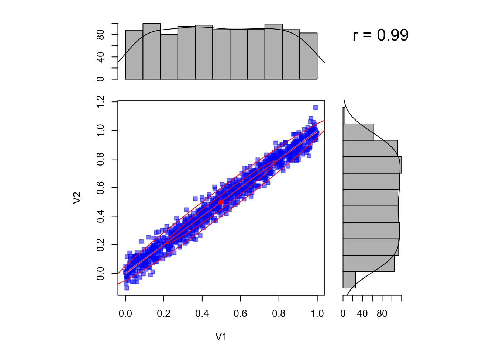
It is therefore vital to plot the correlation plots as well to be able to judge the extent to which parameters are uncertain.
If you have more parameters, however, you may still miss things here, because there could be higher-order correlations between the parameters that look random in the two-dimensional plot. A good proxy to get an overall reduction of uncertainty across all parameters, including all these higher-order correlations, is to compare the prior predictive distribution with the posterior predictive distribution.
2.2.3.2 Nonlinear correlations
A further issue that many people are not aware of is that the marginal mode (maximum) does not need to coincide with the global mode if correlations in parameter space are nonlinear. Assume we have a posterior with 2 parameters, which are in a complicated, banana-shaped correlation. Assume we are able to sample from this posterior. Here is an example from Meng and Barnard, code from the bayesm package (see Rmd source file for code of this function).
If we plot the correlation, as well as the marginal distributions (i.e. the histograms for each parameter), you see that the mode of the marginal distributions will not coincide with the multivariate mode (red, solid lines).
set.seed(124)
sample=banana(A=0.5,B=0,C1=3,C2=3,50000)
scatterhist(sample[,1], sample[,2])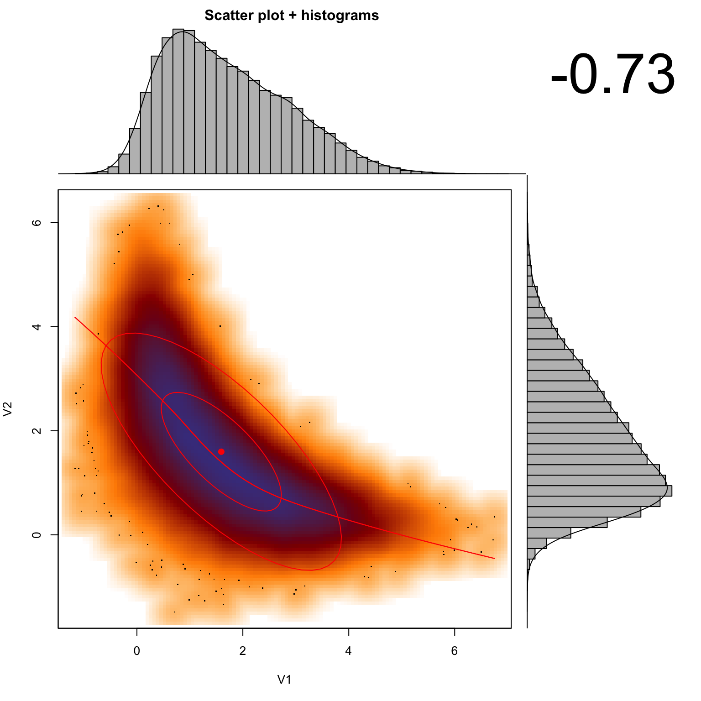
#abline(h = 2.5, col = "green", lwd = 3, lty =2)
#abline(v = 0.295, col = "green", lwd = 3, lty =2)2.2.4 Exercises
Hence, it’s important to note that the marginal distributions are not suited to calculate the MAP, CIs, HPDs or any other summary statistics if the posterior distribution is not symmetric in multivariate space. This is a real point of confusion for many people, so keep it in mind!